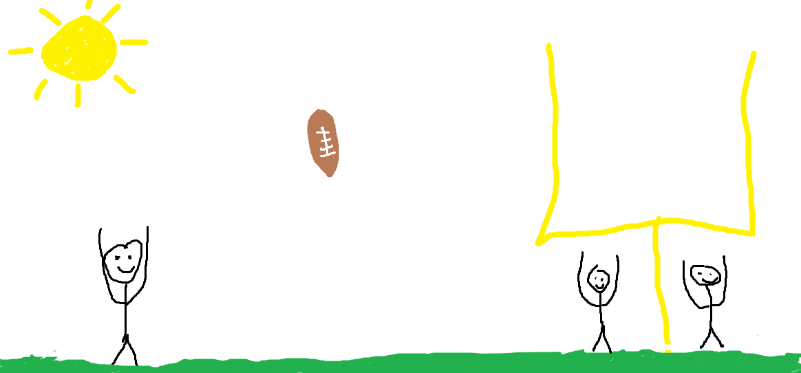

Results From Week One:
Brewer Junction opened their season @ Blaser High. Coach Bim believed Brewer had a strong chance to come out control the football and get take aways and in return this would result in a win. The Brews went up 7-0 in the first half with high expecations for the second half. When they returned to the second half the Brews came out slow with a lack of energy. Blaser High took the opportunity and destroyed the second half leaving the game in a loss for Brewer Junction with a score of 35-7. Coach Bim told us "the lack of mental toughness caused us to come out with a loss."
Results From Week Two:
The Brewers although had a tough break in week one were itching for success in week two to make up for the disappointment they felt after losing. Coach Bim told us before the week started "we are ready to get back out on the field and fix our mistakes because we beat ourselves and that is an easy fix". The Brews came out and didn't surprise any with a great start against Ceasar High Clones. The Brews took an early lead 7-0 and held the lead for the whole first half. The offense destroyed the clones and took a 17-3 lead into half. The Clones came out strong in the second half and scored to make it a 17-10 game but the Brews fired back with back to back scores coming out with a 31-10 victory over Ceasar High.
